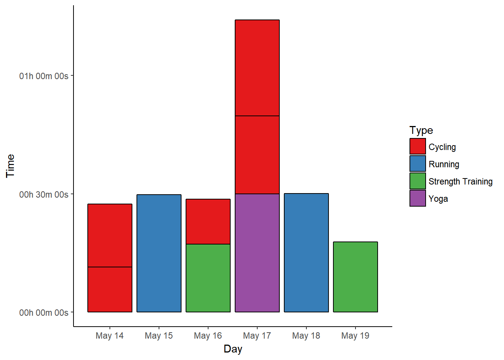
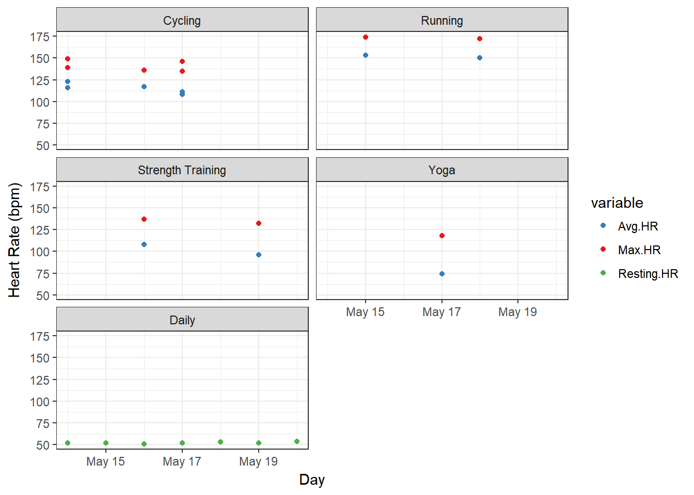
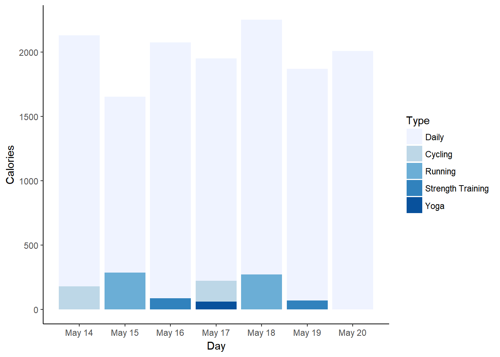
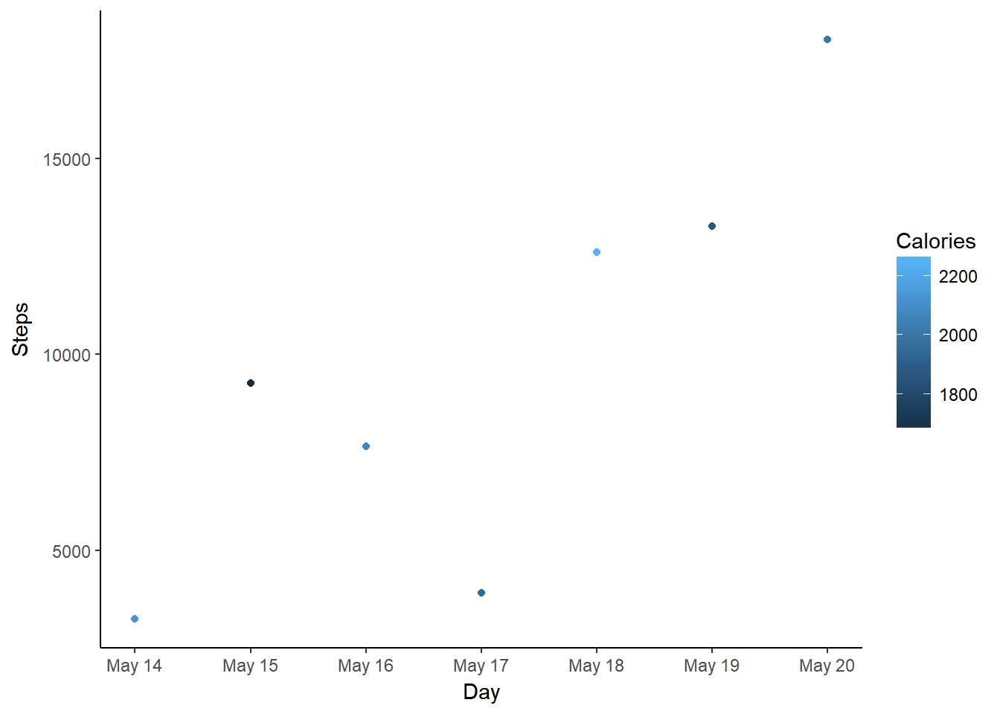

# read in data
data <- read.table("Week1.csv", header = TRUE, sep = ",", na.strings = c("NA",
"--", ""))
# convert time/date objects
data$Start <- as.POSIXct(data$Start, format = "%a, %d %B %Y %H:%M")
data$Time <- times(data$Time)
# remove morning exercise
dataf <- data[!data$Type == "Other", ]
# convert exercise type to factor and reorder for plotting
a <- recode(as.numeric(as.factor(dataf$Type)), "1=1; 2=5; 3=2; 4=3; 5=4")
dataf$Types <- reorder(dataf$Type, a)
# first look
summary(data)
datafMy week one data contains activities I tracked from last Sunday (May 14) to Saturday (May 20), sorted into different types (cycling, running, etc.) together with relevant data, as well as some overall statistics for each day. Here is a table showing how much time I spent with each activity:
kable(ddply(dataf, .(Type), summarise, duration = sum(Time)), format = "html",
table.attr = "style='width:20%;'")| Type | duration |
|---|---|
| Cycling | 01:22:56 |
| Daily | NA |
| Running | 00:59:57 |
| Strength Training | 00:35:01 |
| Yoga | 00:30:00 |
I spent a lot of workout time cycling, but I have to admit that I don’t actually cycle for exercise, but rather to get from A to B. Since the weather was good and we’re currently having some days off, we used our bikes for all kinds of errands… My legs were sore afterwards, though, so it’s still a workout, right?
Since workout duration is important for #SummerPain, a bar chart could be helpful to check on which days I exercised “enough”.
# extract day from activity start
dataf$Day <- as.Date(dataf$Start)
# ignore daily data for plotting
datas <- subset(dataf, !Type == "Daily")
p1 <- ggplot(datas, aes(x = Day, y = Time, fill = Type)) + geom_bar(stat = "identity",
colour = "black") + scale_fill_brewer(palette = "Set1")
p1 <- p1 + scale_y_chron(labels = date_format("%Hh %Mm %Ss"))
p1 <- p1 + theme_classic() + scale_x_date(date_breaks = "1 day", date_labels = "%B %d")
p1
On the first day, we were cycling to run errands and get dinner, so I tracked two separate instances, almost adding up to 30 minutes of cardio that day. With my lack of previous exercise, this was already quite enough.
The running workout on May 15th lasted for almost 30 minutes (29:50 min), because I’ve become “too fast” on our usual route. Since we’re going to move in a month and have to find a totally new route then, I’m not willing to change the routine now, though. However long the run takes, it’s one cardio workout.
May 16th was a strength day with additional cycling to run more errands - one strength workout completed.
Since I’m using yoga for flexibility training and stretching (as opposed to cardio or strength) the two cycling blocks will have to be enough to count for another workout on May 17th.
Running on May 18th was slow and painful - at least that means I was out “long enough” (30:07 min). ;-)
May 19th was a bit more than 15 minutes strength training again, and May 20th was an impromptu rest day, where we were busy organising the move and moving some unimportant stuff.
Measuring the duration of workouts is one thing, but my Garmin data of course provides a lot more information. For example, I wonder if I should count my rather slow cycling as cardio workout (because cycling usually is for cardio) or rather as strength training (since I got sore legs). A look at my heart rate (HR) data might be helpful to answer that question, and luckily I have my average and peak heart rate for each workout at hand.
# melt HR data
HRdata <- melt(dataf, id.vars = c("Activity", "Types", "Day"), measure.vars = c("Avg.HR",
"Max.HR", "Resting.HR"))
p2 <- ggplot(data = HRdata, aes(x = Day, y = value, colour = variable)) + geom_point() +
scale_colour_manual(values = c("#377EB8", "#E41A1C", "#4DAF4A"))
p2 <- p2 + facet_wrap(~factor(Types), nrow = 3)
p2 <- p2 + theme_bw() + labs(y = "Heart Rate (bpm)")
p2
Running definitely results in higher average and maximum heart rates compared to cycling, but cycling at least stays above the 100 bpm mark also for the average heart rate. According to that Fox and Haskell formula thing, I’m moving in the “Fitness” zone when cycling, while running pushes my heart all the way up to anaerobic or even maximum effort zones. So, if I average both workout types together I should be fine for cardio, right? :-D
Strength training gets less of a raise out of my heart rate, and yoga is of course relaxed and not exercise in any HR sense.
Just for fun I also added my daily resting heart rate (RHR) to the plot, which varied from 51 to 54 bpm that week. I think it was lower when I used a Microsoft Band 2 compared to now, but that could be due to different algorithms calculating that metric. According to some charts I found online (while I don’t know anything about this scientifically) I’m still very well off with my current RHR, so I’m happy.
The third metric I definitely want to include is calorie burn, since I always think it’s interesting to know what difference exercise makes compared to a workout-free day.
# reorder types for this plo
b <- recode(as.numeric(as.factor(dataf$Types)), "1=2; 2=3; 3=4; 4=5; 5=1")
dataf$Types <- reorder(dataf$Type, b)
p3 <- ggplot(dataf, aes(x = Day, y = Calories, fill = Types)) + geom_bar(stat = "identity") +
scale_fill_brewer()
p3 <- p3 + theme_classic() + scale_x_date(date_breaks = "1 day", date_labels = "%B %d")
p3
Not surprisingly, running burns the most calories. What does surprise me is that this doesn’t seem to have much influence over my general daily calorie burn, since there’s quite a difference between the two running days. Maybe my overall daily activity has a greater influence than actual exercise?
# subset for only daily data
datad <- dataf[dataf$Type == "Daily", ]
p4 <- ggplot(datad, aes(x = Day, y = Steps, colour = Calories)) + geom_point()
p4 <- p4 + theme_classic() + scale_x_date(date_breaks = "1 day", date_labels = "%B %d")
p4
The days with the lowest calorie burn are not the days with the lowest step count. May 15th does have a lower step count than May 18th (the other running day), though. And May 20th, with no specific exercise, has the most steps, but one of the lower calorie burns.
Overall, I find it difficult to explain these differences using only exercise and step data. A deeper look into my data revealed that Garmin calculates my basal metabolic rate (BMR) new for each day. It seems to be 1698 calories on most days, but on May 15th it’s down to 1074 calories, which explains the difference despite the OK step count (in fact, I did get quite a number of “active calories” that day). There is no explanation for this difference that I can find, though.
In summary - when counting cycling as exercise - I completed six workouts in the first week of #SummerPain. This brings me up to 6/100 workouts as of May 20th.
{kind=link}